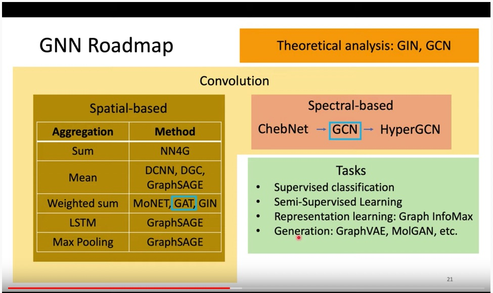
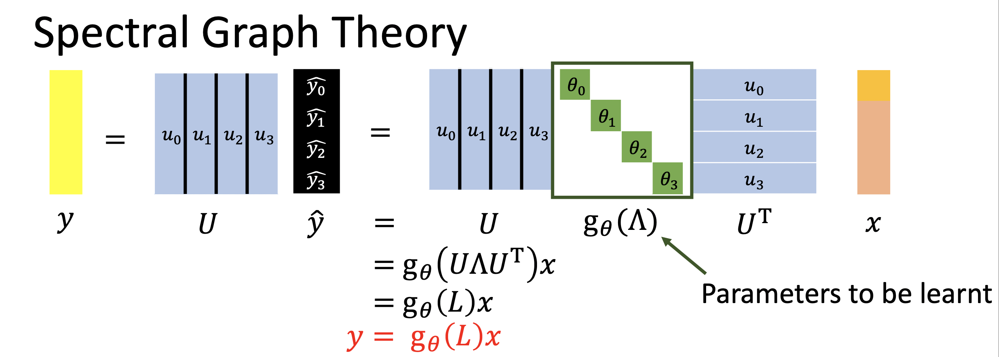
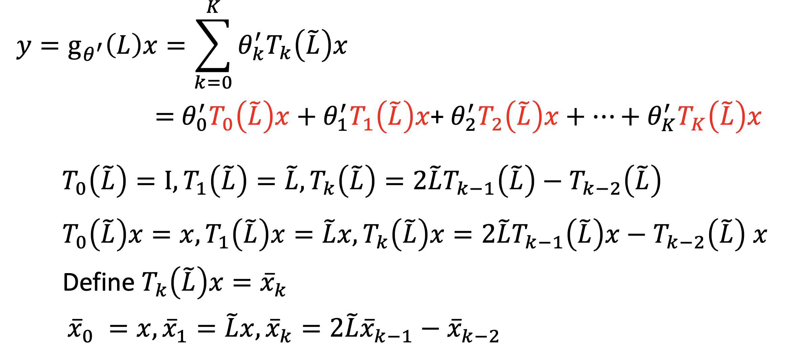
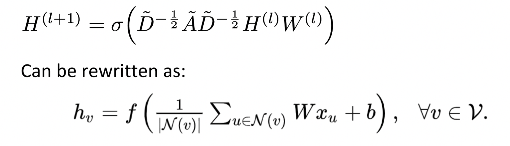

- introduction
- roadmap
- learning tasks
- spatial-based GNN
- Spectral-based GNN
- Highlight
1. introduction
1.1 why
- 实践中有很多数据是图结构的：节点直接的结构和关系信息也很重要。
- 半监督学习，可以根据邻居的信息进行学习
1.2 how
思路：用卷积把节点映射到特征空间，但是由于图的结构通常不是规则的，所以卷积的过程比对图像卷积复杂。
- Generalize the concept of convolution (corelation) to graph >> Spatial-based convolution
- Back to the definition of convolution in signal processing >> Spectral-based convolution
2. road map

3. learning tasks
目前一些benchmark做的task
- Graph classification: 对整个图进行分类。如对MNIST/CIFAR10抽出来super pixel，再分类。
- Regression: 对整个Graph进行回归，如ZINC molecule回归溶解性
- Node classification: 对节点进行进行分类。Stochastic Block Model dataset
- Edge classification: 对边进行分类。Traveling Salesman Problem
4. spatial-based GNN
两个核心概念：
- Aggregate: 用neighbor feature update下一层的hidden state
- readout: 把所有node的feature集合起来代表整个graph。（在对整个graph进行的任务中才会用到。）
4.1 NN4G
aggregate: neighbor的 feature，加起来，乘以weight，再加上自己的。
readout: 对所有层都乘以一个系数，加起来。
是用来做graph任务的。
https://ieeexplore.ieee.org/document/4773279
4.2 DCNN
第n层layer中，把跟node距离为n的节点的feature 加起来，取平均，然后再乘以一个系数。
把所有层中，节点k对应的hidden feature，concate在一起，过一个transform，得到这个节点对应的输出。
是用来做node任务的。
https://arxiv.org/abs/1511.02136
4.3 DGC
把DCNN的concate换成sum。
https://arxiv.org/pdf/1707.01926.pdf
4.4 MoNet
aggregate的时候用weighted sum: 根据每个节点的度（degree），定义出每一条边的权重，transform之后，作为weight乘在feature上。
https://arxiv.org/pdf/1611.08402.pdf
4.5 GraphSAGE
aggregation可以是mean，max-pooling，LSTM
aggregation之后，会过一个激活函数，再进入下一层。（好像跟前面那些模型的区别也不大？）
https://arxiv.org/pdf/1706.02216.pdf
4.6 GAT
重点是，weighted sum中的weight，不是定义出来的，是学出来的。
要算出来节点跟节点之间的energy:
W是学出来的。
https://arxiv.org/pdf/1710.10903.pdf
4.7 GIN
主要是数学证明，aggregation的时候，要用sum，不要用mean，和pooling。（没看懂）
https://openreview.net/forum?id=ryGs6iA5Km
5. Spectral-based GNN
故事是这样的：
Graph不是不像image那样好进行卷积嘛（结构不规则），但是我们又想卷积，那怎么办呢？
我们知道，在时域上用卷积核进行卷积，对应在频域上，是做一个乘法（过一个filter）。那我们可以对graph进行这样的操作么？答案是肯定的。过程是：
- 对Graph进行傅里叶变换
- 过一个filter
- 再进行一次反傅里叶变换
这个过程就相当于用卷积核进行了卷积。
5.1 怎么对graph进行傅里叶变换
拉普拉斯矩阵（Graph Laplacian）L = D - A能表示图的结构信息。
L是半正定的。
L可以进行spectral decomposition(SD)分解。
SD分解得到的特征根，都是非负的，对应于“采样频率”。
SD分解得到的特征向量（正交基），就是傅里叶变换中的基。
- 对图进行Laplacian变换：Lf -> Sum of difference between 𝑣! and its neighbors
- 二阶的Laplacian: fLf -> “Power” of signal variation between nodes, i.e., smoothness of graph
过程就是：
- 做傅里叶变换（以某一频率进行采样）：对graph的input，用L的特征向量进行变换
- 做过滤：对1的结果，在各频率上，乘上系数$\theta$
- 做反变换：左乘特征向量
经过一系列变化，整个过程就变成了：

$g_{\theta}()$可以是任意的函数。
这样的形式，会引入两个问题：
- 复杂度高，节点有N个的话，就要学N个参数。
- 如果$g_{\theta}$可以展开为L的N级函数，那对节点i的变换，会引入所有节点的信息，失去了localize。
5.2 ChebNet
为了解决以上两个问题，有了ChebNet。
为了解决问题1 2，把$g_{\theta}$设计成L的K次多项式。
但是在进行变换的时候，要乘以根向量，运算复杂度O(N^2)，也很慢。
所以，把$g_{\theta}$设计成Chebyshev polynomial，这样可以通过递归来进行变换，算起来比较快。

https://arxiv.org/pdf/1606.09375.pdf
5.3 GCN
对ChebNet进行进一步的简化：
- 让K = 1.
- 让$\lambda$ 约等于2.
- 对$I + D^{-1/2}AD^{-1/2}进行renormalization.
最后就变成：

https://openreview.net/pdf?id=SJU4ayYgl
6. Highlight
- GCN并不是越深越好。各节点会缺少区分度。
- 各种benchmark上，gatedGCN(GCN+GAT)最好。